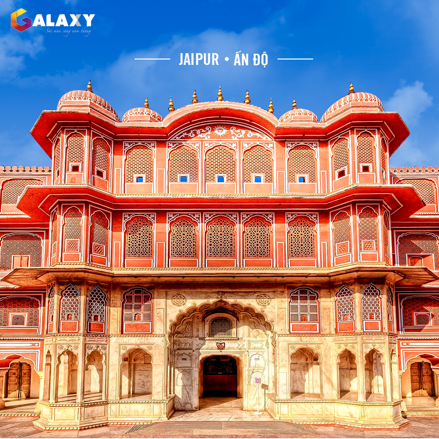
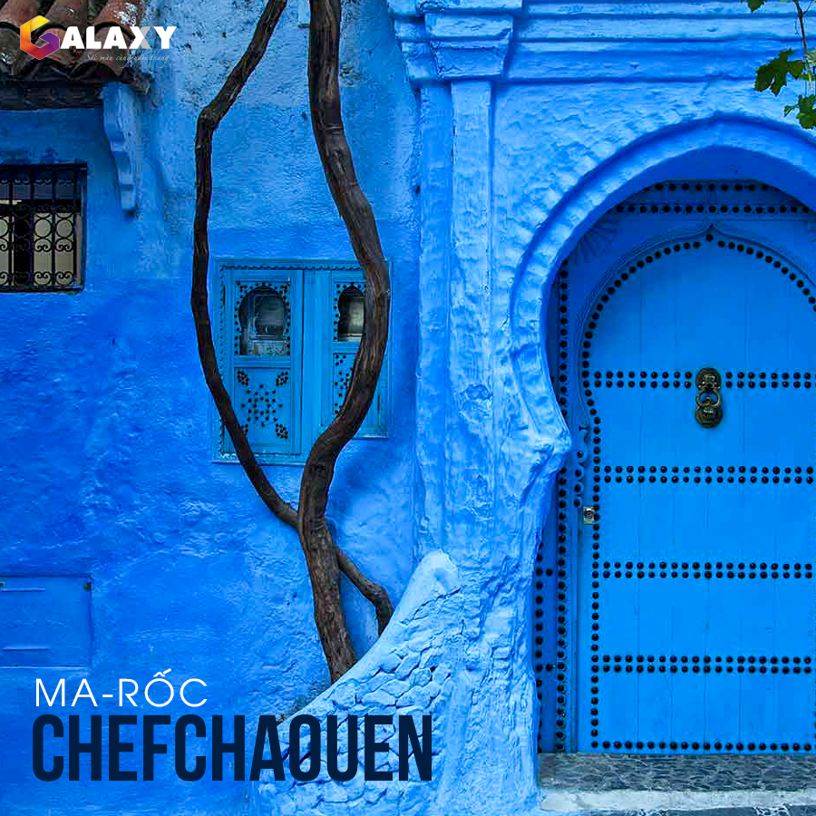
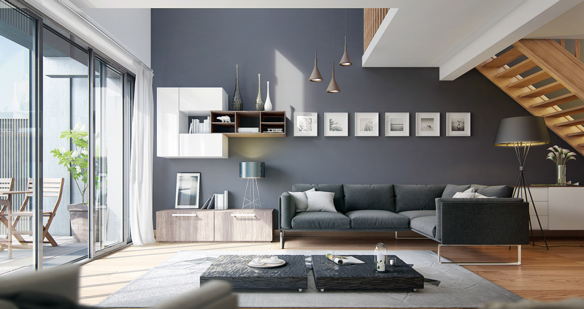
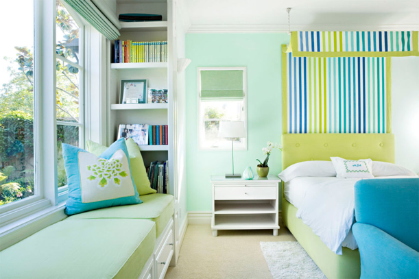
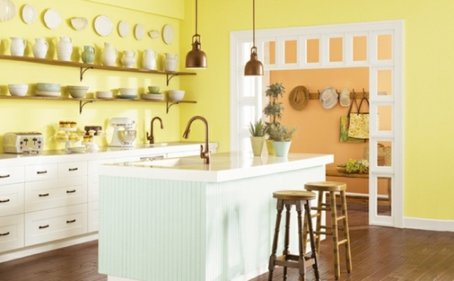
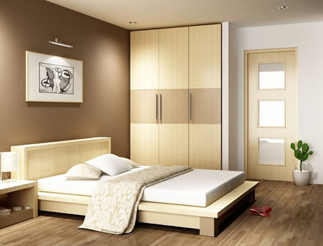
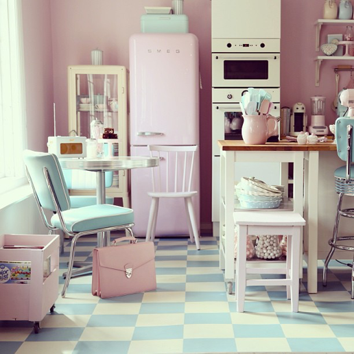
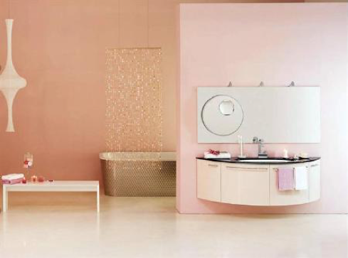
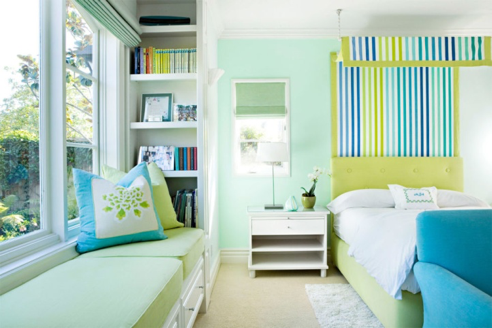
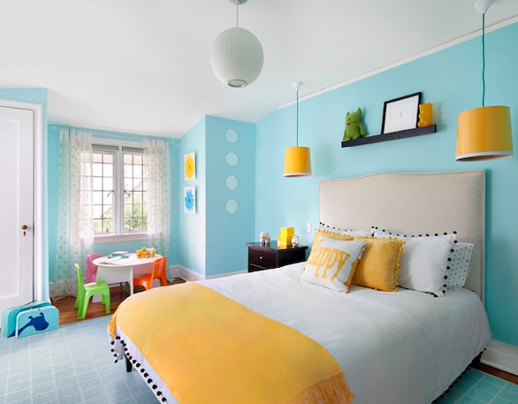

Sắc màu Galaxy
Sắc màu Galaxy Khám phá sắc màu cùng năm tháng
Khám phá sắc màu cùng năm tháng Điểm tô ngày trọng đại
Điểm tô ngày trọng đại Galaxy bền bĩ cùng năm tháng
Galaxy bền bĩ cùng năm tháng Xu hướng sắc màu
Xu hướng sắc màu Bảng màu Galaxy
Bảng màu Galaxy Phần mềm phối màu
Phần mềm phối màu Phối màu miễn phí
Phối màu miễn phí Hướng dẫn sơn nhà
Hướng dẫn sơn nhà 4 bước sơn nhà
4 bước sơn nhà Sản phẩm
Sản phẩm Tính sơn
Tính sơn Đại lý
Đại lý Lucky Painter
Lucky PainterCách khắc phục bông tróc
5 THÀNH PHỐ ĐƠN SẮC PHẢI GHÉ THĂM 1 LẦN TRONG ĐỜI
Những thành phố đơn sắc không chỉ hớp hồn các du khách vì sự choáng ngợp bởi một màu chủ đạo, mà còn níu chân họ vì những câu chuyện thú vị về lịch sử và văn hóa địa phương. Cùng Sơn Galaxy điểm danh 5 thành phố đơn sắc nổi bật dưới đây, để thấy được sự sống động của cuộc sống thế giới qua những gam màu nhé.
1. Thành phố Japur/ Ấn Độ

Được mệnh danh là “Thành phố Hồng hoàng gia” hay “Paris của Ấn Độ”, Jaipur là thủ phủ của thành bang sa mạc Rajasthan. Đặc trưng của thành phố này là những công trình kiến trúc toàn bằng đá sa thạch hồng, từ những pháo đài, đền thờ lớn cho đến những khu chợ nho nhỏ. Nổi tiếng nhất có thể kể đến pháo đài Hổ phách, một phức hợp uy nghi của cung điện, nhà vườn, đền thờ có tuổi đời lên đến 125 năm.
Không những thế, những con đường trong thành phố này đều vuông góc nhau theo hướng từ Đông sang Tây, từ Bắc xuống Nam. Đường phố ở Jaipur còn nhuốm màu kì quái với đủ loại động vật trở thành phương tiện chuyên chở như voi, bò và lạc đà lẫn lộn với xe đạp, xe lôi, xe bus.
2. Thành phố Izama/ Maxico
Izamal là một thị trấn rực rỡ thuộc bang Yucatan của Mexico, với biệt danh “Thành phố Vàng”. Toàn bộ thị trấn cực kì nổi bật với những công trình sơn toàn màu vàng trứng gà, viền trắng. Ngoài ra, Izamal còn là thị trấn cổ nhất của Yucatan, được xây dựng trên nền di tích Maya. Vì vậy, thị trấn có một biệt danh khác là “Thành phố của những ngọn đồi”, do còn lưu giữ khá nhiều đền thờ kim tự tháp cổ của nền văn minh Maya thuộc thời kì tiền-Columbia. Dường như sự đô thị hóa không ảnh hưởng đến nơi đây. Điểm đặc biệt chính là những nhà thờ đá, quầy lưu niệm hay đơn giản chỉ là mặt tiền nhà màu vàng bắt mắt mỗi khi du khách bước qua mỗi góc phố.
3. Thành phố Chefchaouen/ Marroc

Chefchaouen là một thị trấn lớn thuộc miền đông bắc Ma Rốc, địa điểm du lịch nổi tiếng của đất nước châu Phi này. Thị trấn mang một màu xanh mát mắt, nổi bật trên triền núi Rif khô cằn. Tuy nhiên, màu xanh ở đây có nhiều cấp độ khác nhau, từ nhạt đến đậm, phối hợp khá hài hòa và nghệ thuật. Chefchaouen nổi tiếng là một địa danh mua sắm phong phú, đặc sản có thể kể đế là những món quà lưu niệm bằng kim loại, da thuộc, vải dệt lông cừu và phô mai sữa dê.
4. Phố cổ Hội An/ Việt Nam
Ấn tượng đầu tiên của nhiều du khách đặt chân đến Hội An là nét cuốn hút, mời gọi của những ngôi nhà san sát, nhuộm trong màu vàng đậm đặc trưng. Điều nổi bật nhất khi bước vào con phố cổ là màu vàng đậm đặc trưng của đa số nhà nơi đây. Từ thời phong kiến, nhiều người cho rằng màu vàng là tượng trưng cho hoàng tộc. Thế nhưng, theo góc độ của các kiến trúc sư cho rằng màu vàng ít hấp thụ nhiệt, phù hợp với khí hậu ẩm, nhiệt đới của Việt Nam. Dù là lý do nào, sắc vàng vẫn là nét văn hóa đẹp của Việt Nam, tượng trưng cho may mắn, niềm tự hào, thịnh vượng. Các công trình kiến trúc trong khu phố cổ được xây dựng hầu hết bằng vật liệu truyền thống: gạch, gỗ và không có nhà quá hai tầng. Du khách dễ nhận ra dấu vết thời gian không chỉ ở kiểu dáng kiến trúc của mỗi công trình mà có ở mọi nơi: trên những mái nhà lợp ngói âm dương phủ kín rêu phong và cây cỏ; những mảng tường xám mốc, xưa cũ; những bức chạm khắc về một con vật lạ hay diễn tả một câu chuyện cổ.
5. Thành phố Ubrique/ Tây Ban Nha
Thành phố Ubrique là “Thị trấn Trắng” Ubrique, tỉnh Cadiz của vùng tự trị Andalusia, miền nam Tây Ban Nha, Đây là một địa danh giàu truyền thống lịch sử của Tây Ban Nha, với những di tích chứng tỏ sự định cư của người La Mã và Phoenician xa xưa. Ubrique với những dãy nhà cổ san sát màu trắng tinh, tạo nên một khoảng không gian sáng rực rỡ giữa vùng đất hoang vắng và xẫm màu xung quanh. Mặt khác, sở dĩ người dân ở đây chọn màu trắng là vì vùng đất thảo nguyên Andalusia tràn ngập nắng với không khí nóng quanh năm, màu trắng sẽ giúp phản chiếu nhiệt tốt hơn, giữ cho bên trong ngôi nhà mát hơn so với bên ngoài từ 5 - 6 độ.
Cách chọn màu sơn nhà để không gian sáng hơn
Để chọn màu sơn nội thất, màu sơn ngoại thất cho gia đình và bản thân thực sự rất quan trọng,vì màu sắc phong thủy ảnh hưởng rất nhiều đến tương lai, sức khỏe cũng như công ăn việc làm của những người thân trong gia đình, đặc biệt là gia chủ.
Bên cạnh đó, nếu màu sắc là yếu tố về thẩm mỹ được coi trọng nhất thì việc chọn lựa thế nào để khiến cho không gian sống của gia đình trở nên thoáng đãng và sáng sủa lại chính là bài toán mà mỗi gia chủ đều phải suy nghĩ để lựa chọn màu sơn phù hợp nhất cho gia đình mình.
Phòng khách trong một ngôi nhà luôn là không gian quan trọng nhất dành cho cả khách và chủ nhà. Khi bạn bè của bạn đến thăm nhà mới cũng sẽ đặt chân đến căn phòng này đầu tiên. Vì thế, công việc đầu tiên trong việc lựa chọn màu sơn cho ngôi nhà mới đó là không gian phòng khách.
Khi lựa chọn trong bảng màu, bạn nên chọn những gam màu sắc mang lại không gian ấm áp, thân thiện và phù hợp với xu hướng sẽ giúp căn phòng của bạn mang phong cách hiện đại, trẻ trung.

Gam màu xanh nhẹ nhàng, mát mắt cũng cực kì phù hợp với không gian phòng ngủ, gam màu tươi sáng này cộng hưởng với ánh sáng trời từ cửa sổ, cửa ra vào và cả ánh sáng đèn sẽ giúp cho không gian nhà bạn trở nên rộng rãi và sáng hơn bình thường. Giúp tạo cảm giác sảng khoái và thu giãn khi thức dậy vào mỗi buổi sáng sớm.

Với những ai ưa thích sự vintage, nhẹ nhàng và mang cảm giác ấm cúng, chẳng gì tuyệt vời hơn là sự kết hợp những gam màu nóng ấm vừa phải như nâu, cam đất, vàng nghệ, màu kem,v.v… để giúp cho việc sơn phòng được hoàn chỉnh. Màu sơn này không những giúp bạn cảm giác thoải mái mà còn hữu ích rất nhiều trong việc kết hợp các đồ nội thất đồng màu, đặc biệt là những vật dụng bằng gỗ.

Đặc biệt, với những gam màu sơn nhà pastel, không gian sống của gia đình bạn sẽ trở nên sáng sủa đáng kể. Nếu kết hợp cùng những yếu tố ánh sáng trời thì sẽ vô cùng phù hợp.
Nếu bạn đang phân vân không biết nên tìm mua những màu sơn nội thất, sơn ngoại thất đẹp ở đâu thì hãy tìm đến với sơn Galaxy để có thể ứng dụng các cách phối màu sơn nhà đẹp nhất cho chính ngôi nhà thân yêu của mình các bạn nhé.
Xem thêm các chủ đề:
- Chọn sơn ngoại thất chất lượng, sơn tường ngoài trời phù hợp
- Sơn nội thất cao cấp trong nhà
- Gợi ý chọn màu sơn phòng ngủ
- Lời khuyên chọn màu sơn cho phòng khách
- Hướng dẫn sơn phòng khách đẹp
- Mẫu nhà sơn nội thất đẹp
- Màu sơn nhà hợp tuổi
- Chọn màu sơn nhà đẹp theo phong thủy
Tư vấn nên chọn màu sơn trước hay nội thất trước
Việc chọn lựa màu sơn rất quan trọng nhưng chọn lựa nội thất sao cho phù hợp với màu sơn nội thất cũng quan trọng không kém. Có một sai lầm thường gặp khi sơn tường đó là chủ nhân thường sơn những màu mình thích sau đó mua những đồ nội thất theo ý muốn của mình mà không để ý xem chúng có hợp nhau hay không.
Tốt nhất, bạn nên hình dung trước cho mình những món đồ nội thất ưng ý sau đó mới sơn tường. Vì như vậy sẽ đảm bảo sự hài hòa tổng thể ngôi nhà hơn. Nếu bạn sơn tường trước, cần chú ý đặt đồ nội thất phù hợp với màu tường, đừng nên bị trùng lắp hặc quá nổi bật, làm “lạc quẻ” so với mặt bằng chung.
Trong thực tế, một không gian thường có rất nhiều chi tiết. Tuy nhiên, trong một căn phòng, không nên sử dụng quá nhiều màu. Màu nền chính là tấm phông làm nổi bật các chi tiết khác, nên đa phần sẽ là những gam màu sáng, sạch.
Tuy nhiên, với những ai ưa thích sự nổi bật, cá tính, những gam màu mạnh và đậm màu sẽ được lựa chọn làm màu nền, và những vật dụng nội thất cũng vì thế mà màng những màu sắc đối lập.
Các màu sắc tương đồng hiểu đơn giản là các màu tương tự nhau, chẳng hạn như màu be và vàng nhạt, màu xanh dương và xanh da trời…. Những màu sắc tương đồng giúp căn phòng trở nên hài hòa, mắt bạn sẽ không bị khó chịu vì sự thay đổi cường độ màu đột ngột.

Màu sắc tương phản thì dễ làm nổi bật đồ nội thất hơn, như đối lập giữa trắng – đen, màu nóng – màu lạnh, màu đậm – màu nhạt. Phối hợp màu sắc tương đồng nên áp dụng cho phòng ngủ, những góc thư giãn để tạo nên sự yên bình, thoải mái. Nếu sơn tường với gam màu đậm như những màu trên bạn nên sử dụng đồ nội thất có sự kết hợp với các màu sáng hơn như: trắng, hồng nhạt… và hệ thống ánh sáng trắng phù hợp.
Bên cạnh đó, cũng có nhiều những phong cách khác nhu phong cách hiện đại, trẻ trung, phong cách nổi bật, phong cách tối giản,v.v… tùy mỗi người lựa chọn màu sơn nội thất sao cho thật phù hợp với từng vật dụng trong nhà. Hãy đến với sơn Galaxy để có thể lựa chọn những gam màu sơn ưng ý nhất bạn nhé.
Xem thêm các chủ đề:
- Chọn sơn ngoại thất chất lượng, sơn tường ngoài trời phù hợp
- Sơn nội thất cao cấp trong nhà
- Gợi ý chọn màu sơn phòng ngủ
- Lời khuyên chọn màu sơn cho phòng khách
- Hướng dẫn sơn phòng khách đẹp
- Mẫu nhà sơn nội thất đẹp
- Màu sơn nhà hợp tuổi
- Chọn màu sơn nhà đẹp theo phong thủy
Ý tưởng sáng tạo cho màu sơn nhà Pastel
Một trong những yếu tố rất quan trọng tạo nên vẻ đẹp và phong cách riêng cho từng ngôi nhà chính là màu sắc. Chính vì vậy, việc chọn lựa màu sơn nội thất, màu sơn ngoại thất luôn là công việc đòi hỏi óc thẩm mỹ cao trong khâu bài trí vì nó giúp cho gia chủ định hình toàn bộ phong cách nội thất và ngoại thất cho cả căn nhà.
Ngày nay, màu sơn nhà pastel được khá nhiều người ưa chuộng nhờ vào tính thẩm mỹ cao cùng khả năng phối màu dễ dàng và hợp mắt. Với sắc độ nhẹ nhàng, màu pastel tạo ra một bầu không khí phù hợp cho nhiều đối tượng, từ những người yêu sự lãng mạn cho đến những người ưa thích phong cách sang trọng. Những gam màu pastel đang được ưa chuộng hiện nay gồm có:
Màu vàng pastel
Tuy là gam màu nóng nhưng màu vàng pastel lại đem đến cho ngôi nhà của bạn sự ấm cúng vừa phải, không quá chói chang và sặc sỡ. Màu vàng pastel nhẹ nhàng đặc biệt phù hợp với những không gian mở như phòng khách, phòng bếp, nơi tập trung nhiều hoạt động gia đình và đem lại sự dễ chịu cho tất cả các thành viên, đặc biệt là với người lớn tuổi.
Màu hồng pastel

Hồng pastel là gam màu nữ tính và đáng yêu, phù hợp cho những cô nàng điệu đà, thích sự lãng mạn và dễ thương. Nếu biết tận dụng gam màu hồng pastel phối cùng với các đồ trang trí nội thất phù hợp, bạn sẽ có một không gian cực kì đáng ngưỡng mộ vì mang tính thẩm mỹ cao lại vừa cực kì bắt mắt.

Màu xanh lá pastel

Màu xanh lá pastel là một trong những gam màu đặc biệt, đem lại sự thư giãn, tươi mát, gần gũi với thiên nhiên cho gia chủ, đặc biệt phù hợp với những ai mệnh Mộc. Nhiều tone màu khác nhau của màu xanh lá khi phối cùng sẽ khiến cho những căn phòng cũng như những mảng tường nhà của bạn trở nên hài hòa và đặc sắc hơn. Màu xanh lá pastel còn mang đến cảm giác mát mẻ và vui tươi, sơn màu xanh để cải thiện tâm trạng tốt nhất cho bạn sau những giờ làm việc vất vả.
Màu xanh dương pastel

Màu xanh pastel da trời nhẹ nhàng có thể giúp cho bạn thư giãn và cảm thấy thoải mái hơn, đặc biệt phù hợp trong những căn phòng ngủ, nơi chúng ta ngả lưng sau một ngày mệt mỏi nhiều căng thẳng. Sự phối hợp đồ nội thất cùng rèm, tủ, ga giường hay gối đệm cùng nhiều tone màu xanh cũng sẽ giúp cho ngôi nhà của bạn trở nên phong cách hơn, đặc biệt phù hợp với những bé trai nghịch ngợm và năng động.
Nếu vẫn chưa tìm được cho mình một địa chỉ đáng tin cậy, hãy đến với sơn Galaxy để có thể tha hồ lựa chọn những màu sơn phù hợp, đặc biệt là những gam màu sơn nội thất, sơn ngoại thất màu pastel thật phù hợp với nhu cầu của bản thân và gia đình bạn.
Xem thêm các chủ đề:
- Chọn sơn ngoại thất chất lượng, sơn tường ngoài trời phù hợp
- Sơn nội thất cao cấp trong nhà
- Gợi ý chọn màu sơn phòng ngủ
- Lời khuyên chọn màu sơn cho phòng khách
- Hướng dẫn sơn phòng khách đẹp
- Mẫu nhà sơn nội thất đẹp
- Màu sơn nhà hợp tuổi
- Chọn màu sơn nhà đẹp theo phong thủy
Cách phối màu sơn nhà theo tone nóng cực đẹp
Phối màu sơn nhà đẹp không chỉ thể hiện cá tính, điểm nhấn của chủ nhân mỗi căn nhà mà còn giúp cho người dùng thoái mái khi sử dụng căn nhà đó. Đặc biệt, màu sắc còn có khả năng tạo cho căn nhà cảm giác rộng hơn, hẹp hơn, mát hơn, thanh lịch hơn…, tùy vào nhu cầu của người sử dụng. Sau đây là cách phối màu sơn nhà theo tone nóng cực đẹp.
Màu nóng là những màu được tạo nên từ các màu chính sau: cam, đỏ, vàng. Như tên goi, màu nóng làm liên tưởng đến ánh nắng mặt trời, nhiệt độ cao, tạo cảm giác ấm cúng, gần gũi cho không gian. Những màu sắc này thích hợp xây dựng cá tính, phong cách riêng cho từng căn nhà và thường được kết hợp với các màu sắc trung tính khác.
.jpg)
Căn nhà được sử dụng sơn ngoại thất trên tông màu nóng chủ đạo
Màu nóng thường được sử dụng để tạo phong cách cổ điển, truyền thống, sang trọng cho căn nhà. Tuy nhiên, màu nóng dễ tạo cảm giác không gian chật hẹp, bí bách, nên nếu bạn chỉ có không gian giới hạn và muốn sử dụng sơn nội thất bằng gam màu nóng, thì bạn nên chỉ điểm xuyến vài góc trong căn nhà.

Điểm xuyến màu nóng tạo điểm nhấn nổi bật cho căn nhà
Do màu nóng mang lại quá nhiều năng lượng, nên bạn không nên sử dụng là màu chủ đạo cho căn phòng ngủ.

Tránh dùng màu nóng làm tông màu chủ đạo cho phòng ngủ.
Không nên dùng quá 3 gam màu cho 1 căn phòng, trong đó nên chọn gam màu chủ đạo trung tính, khi đó căn nhà của bạn không quá “nóng bức” mà lại không làm ảnh hưởng tới chức năng làm điểm nhấn nổi bật cho căn phòng.

Màu vàng kết hợp màu trắng tạo sự ấm áp cho không gian nhưng không quá chói mắt
Màu đỏ: thường được quan niệm sẽ mang lại điều may mắn và tài lộc đến cho gia chủ. Tuy nhiên, màu đỏ thuộc gam màu nóng và chói, do đó nếu sử dụng màu này đòi hỏi cẩn thận và tiết chế trong sử dụng để có được không gian đẹp.
Màu đỏ thì thích hợp nhất để sơn tường cho phòng khách, để làm dịu tính nóng của màu đỏ, bạn có thể phối sofa màu trắng, rèm cửa màu nhạt,…

Sơn nội thất màu đỏ kết hợp màu trắng để có không gian hài hòa cho mắt
Màu vàng: tượng trưng cho sự giàu sang và phú quý, xa hoa, tráng lệ và dễ sử dụng hơn so với màu đỏ, có thể làm màu sơn tường cho phòng khách, phòng ăn và phòng ngủ.

Màu vàng kết hợp màu trắng tạo không gian ấm cúng, sang trọng.
Màu cam: khi màu đỏ mang lại may mắn, màu vàng mang lại sự sang trọng, thì màu cam lại mang lại sự vui tưới, năng động.
Bạn có thể sử dụng màu cam đậm cho phòng khách nổi bật và màu cam nhạt cho phòng ngủ ấm áp.
 Màu cam đậm cho phòng khách và cam nhạt cho phòng ngủ
Màu cam đậm cho phòng khách và cam nhạt cho phòng ngủ
Để được tư vấn thêm các cách phối màu sơn ngoại thất, nội thất, hãy liên hệ ngay hotline sơn Galaxy.
Xem thêm các chủ đề:
- Chọn sơn ngoại thất chất lượng, sơn tường ngoài trời phù hợp
- Sơn nội thất cao cấp trong nhà
- Gợi ý chọn màu sơn phòng ngủ
- Lời khuyên chọn màu sơn cho phòng khách
- Hướng dẫn sơn phòng khách đẹp
- Mẫu nhà sơn nội thất đẹp
- Màu sơn nhà hợp tuổi
- Chọn màu sơn nhà đẹp theo phong thủy
10 Mẫu Nhà Có Sơn Ngoại Thất Cực Đẹp 2016
Trước khi bắt đầu xây dựng một căn nhà, gia chủ luôn phải đắn đo suy nghĩ hình dáng căn nhà phải như thế nào để phù hợp với gia đình mình, phù hợp với sở thích của mình và phù hợp với mảnh đất chuẩn bị xây lên. Để giúp bạn có thông tin để lựa chọn cho mình ngôi nhà phù hợp, dưới đây là 10 mẫu nhà có sơn ngoại thất, sơn tường ngoài trời cực đẹp 2016.
- Mẫu nhà ống:
Mẫu nhà ống là mẫu nhà điển hình ở các khu dân cư đông người, đất đắt đỏ. Ưu điểm của nhà ống là tối đa hóa diện tích sử dụng mảnh đất, tạo không gian thoải mái cho mỗi gia đình trên mảnh đất giới hạn. Tuy nhiên, nhược điểm của mẫu nhà này là nếu không chú trọng vào trang trí mặt tiền và kết hợp chọn màu sơn ngoại thất phù hợp, thì ngôi nhà sẽ không được đẹp. Dưới đây là các mẫu nhà ống được kết hợp với sơn ngoại thất cực đẹp.

Mẫu nhà ống kết hợp với sơn ngoại thất cực đẹp
- Biệt thự 3 tầng mái bằng:
Biệt tự 3 tầng là dạng nhà này được xây dựng trên diện tích không quá lớn nhưng phải có không gian thoáng đãng các bên. Những ngôi nhà dạng này thể hiến sự cá tính, sang trọng cho chủ nhà qua cả thiết kế và màu sơn ngoại thất đẹp. Ngoài ra, mẫu nhà này có thể đón nhận ánh sáng tự nhiên theo nhiều hướng.
 Mẫu nhà biệt thự 3 tầng mái bằng kết hợp hơn ngoại thất cực đẹp
Mẫu nhà biệt thự 3 tầng mái bằng kết hợp hơn ngoại thất cực đẹp
- Nhà cấp 4:
Nói đến nhà cấp 4 thì không còn chỉ có nghĩa là những ngôi nhà nhỏ, bề ngoài bình thường như ngày trước, mà bây giờ, nhà cấp 4 cũng đã có những thiết kế rất ấn tượng và đẹp. Thường được xây dựng ở nơi không tập trung đông dân cư, diện tích đất lớn, gia chủ không thích ở trên cao, nhà tầng.
 Mẫu nhà cấp 4 kết hợp hơn ngoại thất cực đẹp
Mẫu nhà cấp 4 kết hợp hơn ngoại thất cực đẹp
- Biệt thự mái ngói:
Dạng biệt thực này thì có phần cổ điển hơn so với biệt thự mái bằng. Dành cho những gia chủ có tính cách không quá thích sự cách tân, hiện đại như mái bằng.
 Biệt thự mái bằng giao thoa giữa cổ điển và hiện đại, kết hợp với sơn ngoại thất cực đẹp
Biệt thự mái bằng giao thoa giữa cổ điển và hiện đại, kết hợp với sơn ngoại thất cực đẹp
- Mẫu nhà 2 tầng:
Với quy mô số lượng thành viên như hiện nay thì nhà 2 tầng có vẻ là phù hợp nhất cho các gia đình. Không quá nhỏ, gây giới hạn không gian của mỗi người, nhưng cũng không quá rộng, làm mất cảm giác ấm cúng cho căn nhà.
 Mẫu nhà 2 tầng ấm cúng, kết hợp màu sơn ngoại thất cực đẹp
Mẫu nhà 2 tầng ấm cúng, kết hợp màu sơn ngoại thất cực đẹp
Để có những lựa chọn đúng đắn và phù hợp nhất cho ngôi nhà của mình, hãy đến với sơn ngoại thất Galaxy - nơi bạn cung cấp cho bạn những màu hơn hợp ý nhất.
Xem thêm các chủ đề:
- Chọn sơn ngoại thất chất lượng, sơn tường ngoài trời phù hợp
- Sơn nội thất cao cấp trong nhà
- Gợi ý chọn màu sơn phòng ngủ
- Lời khuyên chọn màu sơn cho phòng khách
- Hướng dẫn sơn phòng khách đẹp
- Mẫu nhà sơn nội thất đẹp
- Màu sơn nhà hợp tuổi
- Chọn màu sơn nhà đẹp theo phong thủy